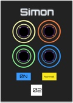
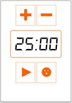
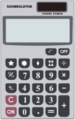

I decided to take on this project to build a useful application that uses an remote API to update the DOM. Pivotal Tracker's API was a great choice as it is an amazing agile resource. It's been a blast learning the Pivotal Tracker API and quickly became a meta app making process. As it evolved, I was using the app I making to efficently make the app I'm using :) This process has also taught me the ins and outs of building a clean UI that is satisfying to use! Built with HTML, CSS, javaScript, jQuery and the axios library.
This is my UI spin on the classic Simon memory builder game from the 80's. The user is presented with a random series of button presses begining with only one press. Each time you input the series correctly the computer presents the same series again but with one additional step. Strick mode takes you immediately back to level 1 if you make a mistake. If you get a series of 10 steps correct you win the game. This was built with javaScript and jQuery. I originally used Sketch to prototype the UI.
I built a mobile friendly pomodoro timer to take on a project that I could use on a daily basis throughout my developer journey. You typically set the timer for 25 minutes of work (length of time is adjustable) and following that period there is a 5 minute period of non-work. During the non work period the face button is enabled and that takes you to a nice meditative breathing website. The alaram sound is a Sansula that I sampled to provide a pleasant bell like tone.
I built a calculator with javaScript along with my own added twist. Synthesizer tones are played as you press the buttons and depending on the equation a melody is played once you hit the equals button. If you wondering what the strange button are at the top, they change the musical scale of the tones that can be played. I used the Tone.js library to interact with the WEb Audio API and I used Sketch to create the SVG calculator.